東京恐怖病院 跨時空敘事場景重現，完成一場黑暗中的沉浸式體驗
牆不能靠建築，卻要靠得住觀眾
東京恐怖病院臺灣站｜1,200+㎡跨樓層暗黑體驗，與一套不能鑽孔的結構系統
我們負責「東京恐怖病院」臺灣站的展場工程執行–把日本東映株式會社累積十餘年、於日本各地巡演的實體恐怖體驗展，完整落地到國立臺灣科學教育館西側特展室的兩層樓空間裡，並在展期結束後執行全區拆除復原。
展覽以「現代館」與「過去館」兩條時空敘事線構成：現代館重現診療室、病歷室、急診室、手術室等當代醫療場景；過去館則把時空拉回大正時期的新宿診療所，重建土間、和室、庭園等傳統日式建築格局。兩館之間以劇情動線串連，帶領參觀者尋找失蹤少女「SAKURA」的秘密。展場橫跨科教館7樓與8樓兩個樓層，動線設計必須同時滿足敘事節奏，跟大量人流分批入場的管制需求。
日方對場景的要求，細到每一道刮痕
我們依照日方場景設計圖與大正時期建築考據資料，搭配日本原廠製作的道具與佈景，在既有展覽廳空間裡搭建診療室、手術室等現代場景，以及土間、庭園等和風場景–這代表同一個工地裡，要同時處理跨時代、跨風格的材質與工法轉換。東映對場景細節的要求很嚴謹，從建材質感、色澤做舊、五金構件到陳設擺件，都必須忠實呈現大正時期日式建築與現代醫療場景的時代質感，每一處施作細節都要通過日方場景考究審核，才能算數。
嚇人的機關，觀眾看不到一絲破綻
場內佈建多組微動開關，串聯風、氣味、燈光、音效等感官裝置，依參觀動線精準觸發對應效果，在黑暗空間裡營造高度沉浸的恐怖體驗。各分區另外設置隱藏通道與機關裝置，配合10位以上專業演員的走位、埋伏與登場時機，在有限空間內完成多點、多角色的驚嚇節奏設計，同時得兼顧演員進出的安全性與劇情張力。
牆不能靠建築，卻要靠得住觀眾
這是整個案子裡最挑戰的一關。科教館場館規範不允許任何隔間與佈景牆鑽孔、鎖固於原建築的牆面、地板或天花，所有結構只能靠構件互相支撐的自立式系統完成搭建，不能碰原建築一下。但問題是–遊客在暗黑驚嚇的情境下，會出於本能推撞牆面、抓扶道具，這是最正常不過的生理反應。也就是說，這些牆體必須同時做到兩件互相矛盾的事：完全不依附建築，卻要撐得住觀眾在驚嚇瞬間的推撞與抓扶。我們把所有非固著牆體與可觸及道具都額外強化了結構承載力，在無法固定於原建築的限制下，同時滿足人員安全、場景真實感與長期展期的耐用度。
展場橫跨7樓與8樓兩個特展室，工程規劃也必須配合既有建築結構、消防動線與參觀人流管制點位，確保沉浸式體驗跟場館的安全規範同時成立；作為科教館常設特展空間內的短期展覽工程，施工期間也得配合館方營運時程及既有機電、消防系統，在既定工期內完成全區搭建。
展期（2015年6月27日至9月13日）結束後，我們完成展場全區拆除工程，把特展室恢復到可供館方後續使用的原始狀態–從搭建、營運到退場，走完一套完整的工程週期。
有專案想討論？
聯絡我們
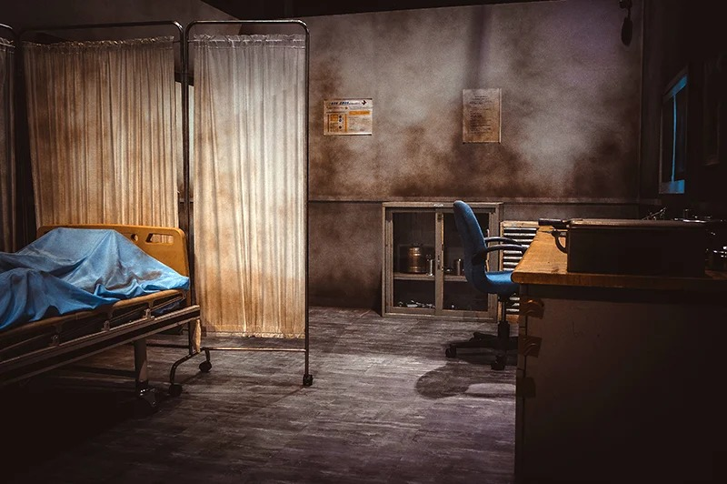
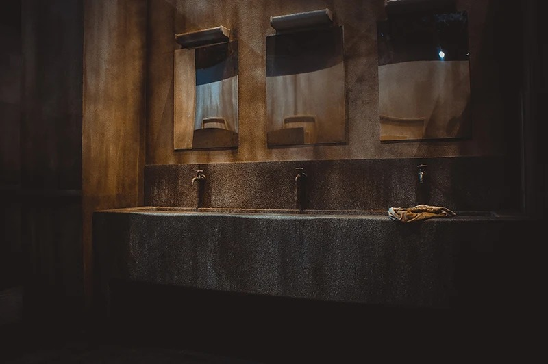
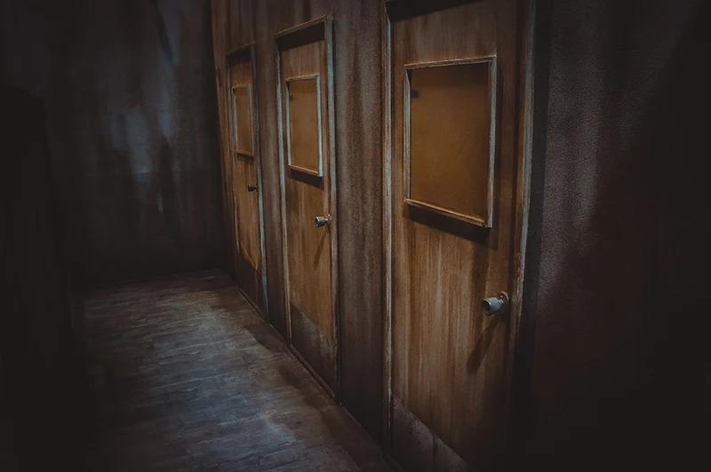
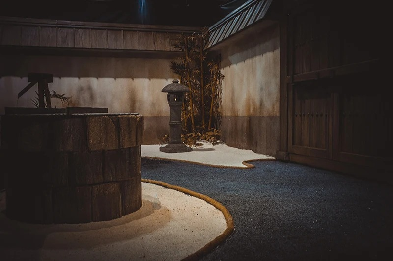
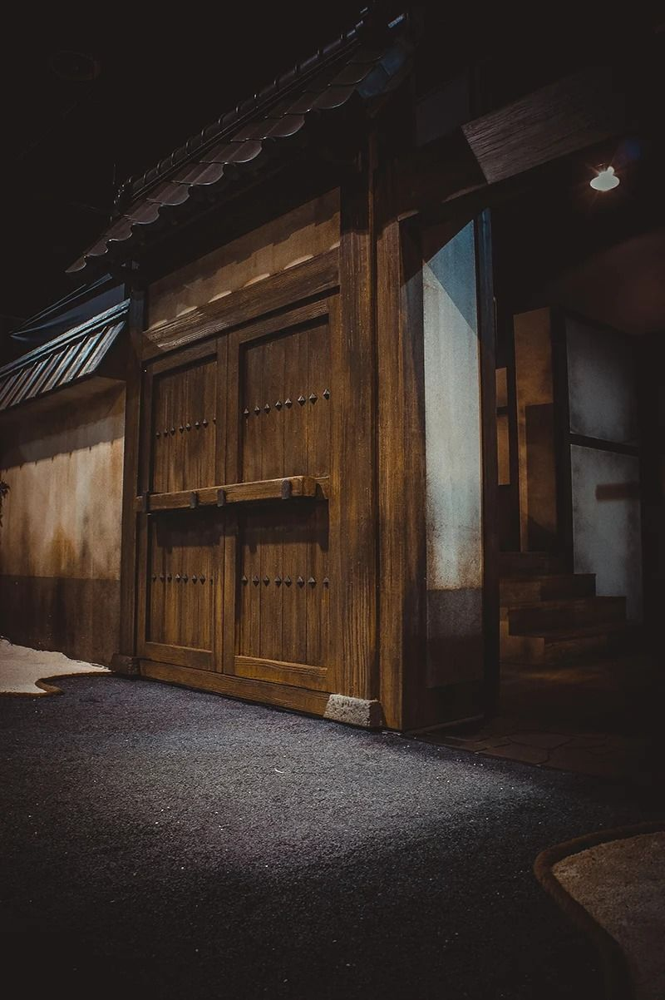
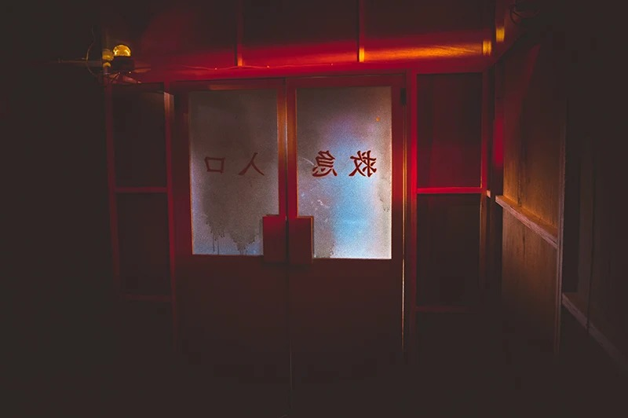
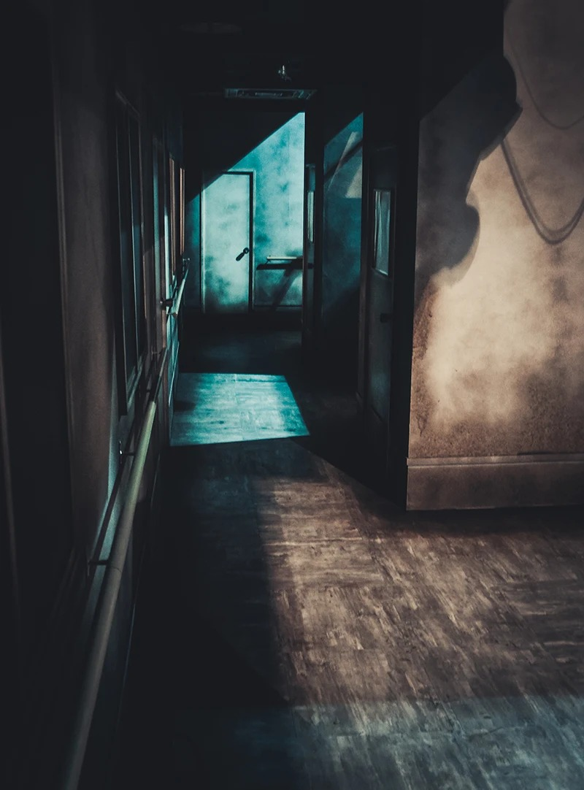
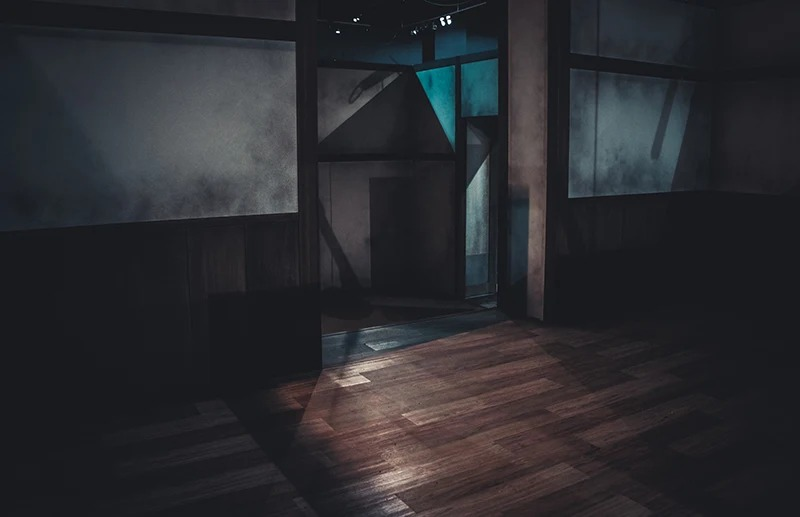
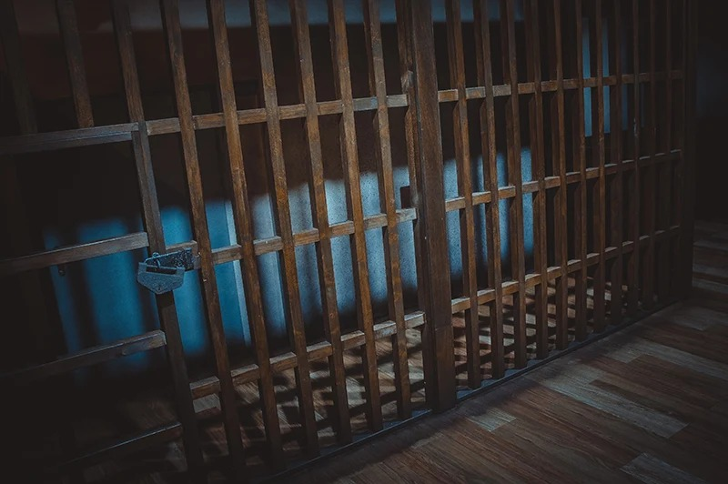
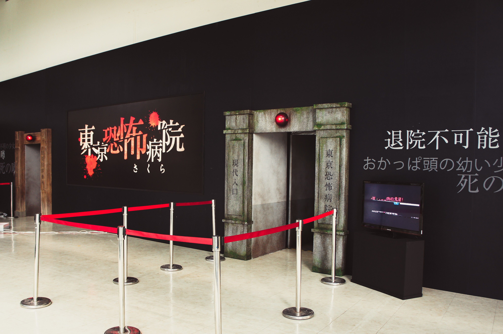
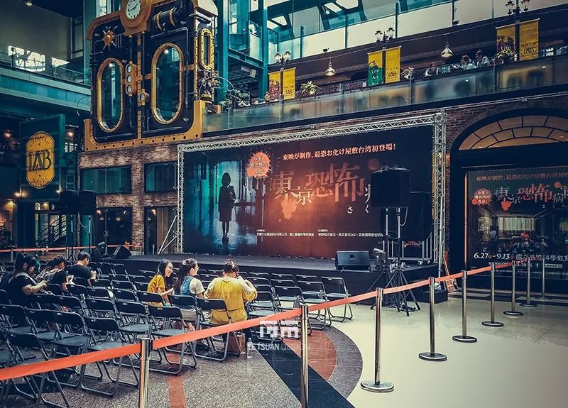
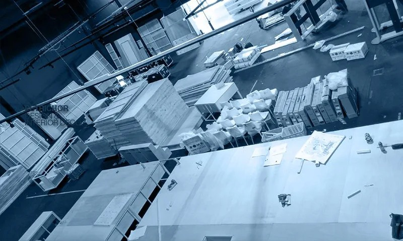
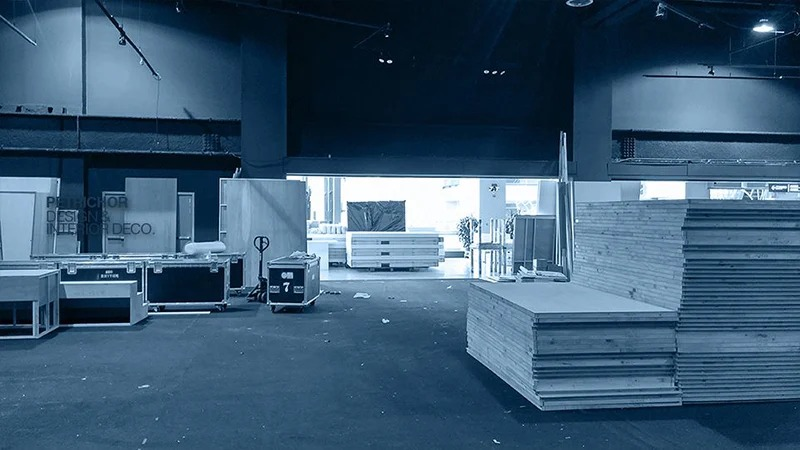